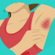

هیدرآدنیت چرکی
hydratinitis suppurativa
- Tab naproxen 500 bd PRN
- Cap Doxycycline 100mg daily or bd Or tab minocyclin 100mg bd
- Topical cream clindamycin bd
در قسمت علائم stage های بیماری رو مطالعه کنید و در نظر داشته باشید که ما فقط stage 1 بیماری رو درمان می کنیم و سایر موارد رو باید ارجاع بدیم
نکات درمانی:
نکته ۱ : بیمار را از نظر comorbidity هایی مثل سندرم متابولیک ، دیابت ، دیس لیپیدمی و آنمی بررسی کنید و آزمایش درخواست بدید
نکته ۲ : توصیه به قطع مصرف سیگار ، الکل و کاهش وزن ( درصورت چاقی ) کنید
نکته ۳ : برای ضایعات علامت دار حاد میتوان از کمپرس گرم ، تزریق داخل ضایعه ای کورتیکوستروئید استفاده کنید به این صورت که ۰.۲ تا ۱ سی سی از تریامسینولون با غلظت ( 10 mg/mL) داخل ندول تزریق کنید
نکته ۴ : در خانم های مبتلا به pco یا علائم مرتبط با منس میتونیم ocp یا اسپیرونولاکتون بدیم.
نکته ۵ : در افراد چاق متفورمین هم به درمان اضافه کنید
نکته ۶ : بعد ۳ ماه بیمار را ارزیابی کنید و اگر خوب شده بود اتتی بیوتیک رو قطع کنید
تعریف : نوعی التهاب مزمن پوستی است که غدد عرق را درگیر میکندو به طور اولیه در نواحی چین های بدن مثل آگزیلا ، کشاله ران ، پرینه , ژنیتال و پری آنال را درگیر میکند
سن درگیری : بلوغ تا ۴۰ سالگی
علایم
🔹ندول های التهابی و دردناک
🔹تبدیل ندول به آبسه در صورت عود مکرر
🔹خروج ترشح چرکی و بدبو
🔹تونل های پوستی به صورت سینوس یا فیستول
🔹کومدون
🔹اسکار
مراحل و stage
●Stage I – Abscess formation (single or multiple) without skin tunnels or cicatrization/scarring
●Stage II – Recurrent abscesses with skin tunnels and scarring, single or multiple widely separated lesions
●Stage III – Diffuse or almost diffuse involvement, or multiple interconnected skin tunnels and abscesses across the entire area
1️⃣ فولیکولیت
2️⃣ فرونکل
3️⃣ کربانکل
4️⃣ آکنه ولگاریس
5️⃣ کیست پیلونیدال
6️⃣ بیماری کرون
7️⃣ گرانولوم اینگوئیناله